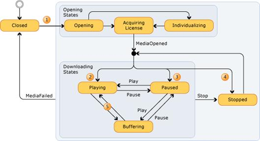

2.1 Ios 和 Android系统中的Audio/Video player
2.2 Windows Phone 8 Audio/Video player
2.2.1 使用 CurrentState 和 CurrentStateChanged
1 ImageViewer
1.1 Ios和Android中的ImageViewer
Ios体系中使用UIImageViewer来展示本地或者服务端的图片资源，一个image view可以展示一个图片或者一组图片的动画。这个控件允许你一副图片（包括JPEG和PNG格式）或者在屏幕上展示一组图片，控件会根据你屏幕的尺寸自动放大缩小图片的尺寸，image view还可以根据图像时候高亮来显示不同的图片或者图片序列。Image view与 UIImage类一样支持TIFF, JPEG, PNG, Windows bitmap (bmp), Windows icon (ico), Windows cursor (cur), 和 X Window System bitmap (xbm) 等格式.
Android 系统中使用android.widget.ImageView控件来展示图片，显示任意图像，例如图标。ImageView类可以加载各种来源的图片（如资源或图片库），需要计算图像的尺寸，比便它可以在其他布局中使用，并提供例如缩放和着色（渲染）各种显示选项。
1.2 Windows Phone 8 中的Image
1.2.1 方法
AddEventListener , CaptureMouse, Equals, FindName (DependencyObject), GetHost, GetParent, GetValue, ReleaseMouseCapture,RemoveEventListener, SetSource (Image), SetValue
1.2.2 属性
Canvas.Left 、Canvas.Top、Canvas.ZIndex、Clip、Cursor、DownloadProgress (Image)、Effect (Silverlight 3)、Grid.Column(Silverlight 2)、Grid.ColumnSpan (Silverlight 2)、Grid.Row (Silverlight 2)、Grid.RowSpan (Silverlight 2)、Height (UIElement)、HorizontalAlignment (Silverlight 2)、Margin (Silverlight 2)、MaxHeight (Silverlight 2)、MaxWidth (Silverlight 2)、MinHeight(Silverlight 2)、MinWidth (Silverlight 2)、Name (DependencyObject)、Opacity (UIElement)、OpacityMask、Projection(Silverlight 3)、RenderTransform、RenderTransformOrigin、Resources、Source (Image)、Stretch (Image)、Style(Silverlight 2)、Tag、Triggers、VerticalAlignment (Silverlight 2)、Visibility、Width (UIElement)
1.2.3事件
DownloadProgressChanged (Image) , ImageFailed (Image), ImageOpened (Silverlight 3), Loaded, MouseEnter, MouseLeave,MouseLeftButtonDown, MouseLeftButtonUp, MouseMove, MouseWheel (Silverlight 3)
1.2.4 备注
可以使用 Source 属性引用 JPEG 和 PNG 文件格式的图像。
如果 Source 属性设置为无效格式，或其指定了无法解析的 URI，将引发 ImageFailed 事件。 此外还会引发一个错误，报告 Source 的 SetValue方法中的失败操作。
Silverlight 不支持 PNG 规范中包括的所有可能的颜色深度。 Silverlight 支持下面的 PNG 颜色深度：
● 索引颜色 - 1 位、4 位或 8 位颜色深度（每个通道）。
● 真彩色：24 位颜色深度，或每个通道 32 位颜色深度（对于真彩色加 alpha）。
图像的 Height 或 Width 在引发 ImageOpened 前可能无效，因为图像需要一个很短的时间对源进行解码。
1.2.5示例
下面的 XAML 示例演示如何将 Image 对象的 Source 属性设置为 PNG 文件。 此外，该示例还使用同一 PNG 图像文件作为显示照片标题的TextBlock 对象的 ImageBrush 对象。
XAML
1.2.6 BitmapImage
BitmapImage 是一个为加载 可扩展应用程序标记语言 (XAML) 而优化的专用 BitmapSource，并且是一种将图像显示为 Image 控件的Source 的简便方式。
BitmapImage 实现 ISupportInitialize 接口，以对多个属性的初始化进行优化。 只能在对象初始化过程中进行属性更改。 调用 BeginInit 以表示初始化开始；调用 EndInit 以表示初始化结束。 初始化一旦开始之后，将忽略所做的属性更改
下面的示例演示如何使用代码呈现 200 像素宽的图像：
下面的示例演示如何使用代码呈现 200 像素宽的图像：
// Create Image Element
Image myImage = new Image();
myImage.Width = 200;
// Create source
BitmapImage myBitmapImage = new BitmapImage();
// BitmapImage.UriSource must be in a BeginInit/EndInit block
myBitmapImage.BeginInit();
myBitmapImage.UriSource = new Uri(@"C:\Documents and Settings\All Users\Documents\My Pictures\Sample Pictures\Water Lilies.jpg");
myBitmapImage.DecodePixelWidth = 200;
myBitmapImage.EndInit();
//set image source
myImage.Source = myBitmapImage;Windows8将与位图图像的图像处理和获取资源相关的类型Windows.UI.Xaml.Media.Imaging命名空间中，BitmapImage位于此命名空间，为 Source 和 ImageSource 属性提供实际的对象源类型。更多信息参见BitmapImage 类、
XAML image sapmle
1.2.7 图像裁切
windows phone 8和Windows8中，若要裁切图像，可以使用 Image 或 CroppedBitmap 的 Clip 属性。 通常情况下，如果您只想调整图像的一部分，则应使用 Clip。 如果需要编码和保存裁切过的图像，应使用CroppedBitmap。 下面的示例使用 EllipseGeometry 和 Clip 属性来裁切图像，XAML实现如下：
C#实现代码如下：
//Create the image for clipping
Image clipImage = new Image();
clipImage.Width = 200;
clipImage.Margin = new Thickness(5);
//Create & Set source
BitmapImage bi = new BitmapImage();
//BitmapImage.UriSource must be in a BeginInit/EndInit block
bi.BeginInit();
bi.UriSource = new Uri("pack://application:,,/sampleImages/gecko.jpg");
bi.EndInit();
clipImage.Source = bi;
//Clip the using an EllipseGeometry
EllipseGeometry clipGeometry = new EllipseGeometry(new Point(75, 50), 50, 25);
clipImage.Clip = clipGeometry;2 Audio/Video player
2.1 Ios 和 Android系统中的Audio/Video player
你可以使用AVPlayer对象来是实现控制和单一和多个媒体的播放。多个媒体的播放支持高级模式。
AVPlayer 对于本地和远程的媒体文件都有很好的体验, 为你准备要播放的内容信息和需要在继续操作之前等待更多数据的适当信息。你可以通过CoreAnimation 层AVPlayerLayer类中的AVPlayer 实例来播放可视化内容。如果要与其他CoreAnimation 层的组件同步,你可以使用 AVSynchronizedLayer. 对于AVPlayer 对象你不能使用AVVideoCompositionCoreAnimationTool的实例。
你可以使用kvo来观察player状态，所以你可以安全的添加或者删除观察者, AVPlayer 会将播放当中产生的通知动态的序列化到一个分发队列中。
Android 使用MediaPlayer 类来播放音视频文件或者流。详细参见
1. 状态时序
2. 有效和无效的状态
3. 权限
4. 注册信息和错误回调
2.2 Windows Phone 8 Audio/Video player
Windows phone8 中使用MediaElement来播放音视频文件。
MediaElement 的当前状态（Buffering、Closed、Error、Opening、Paused、Playing 或 Stopped）会影响到使用媒体的用户。 例如，如果某用户正在尝试查看一个大型视频，则 MediaElement 将可能长时间保持在 Buffering 状态。 在这种情况下，您可能希望用户界面 (UI) 中提供某种还不能播放媒体的提示。 当缓冲完成时，您可能希望指示现在可以播放媒体。
2.2.1 使用 CurrentState 和 CurrentStateChanged
下面的示例演示一种方法，以便显示 MediaElement 的 CurrentState。 它创建一个 MediaElement 和若干按钮，以便控制媒体播放。 为了显示MediaElement 的当前状态，本示例注册 CurrentStateChanged 事件并且使用某一事件处理程序来更新 TextBlock。
XAML
C#
private void StopMedia(object sender, RoutedEventArgs e)
{
media.Stop();
}
private void PauseMedia(object sender, RoutedEventArgs e)
{
media.Pause();
}
private void PlayMedia(object sender, RoutedEventArgs e)
{
media.Play();
}
private void Media_State_Changed(object sender, EventArgs e)
{
mediaStateTextBlock.Text = media.CurrentState.ToString();
}2.2.2 状态转换表
下表汇总了 MediaElement 可处于的不同状态。 与 MediaElementState 的枚举值相对应的状态。
|
值 |
描述 |
|
AcquiringLicense |
仅在播放 DRM 受保护的内容时适用： MediaElement 正在获取播放 DRM 受保护的内容所需的许可证。 调用OnAcquireLicense 后，MediaElement 将保持在此状态下，直到调用了 SetLicenseResponse。 |
|
Buffering |
MediaElement 正在加载要播放的媒体。 在此状态中，它的 Position 不前进。 如果 MediaElement 已经在播放视频，则它将继续以显示所显示的上一帧。 |
|
Closed |
MediaElement 不包含媒体。 MediaElement 显示透明帧。 |
|
Individualizing |
仅在播放 DRM 受保护的内容时适用： MediaElement 正在确保正确的个性化组件（仅在播放 DRM 受保护的内容时适用）安装在用户计算机上。 有关更多信息，请参见 数字版权管理 (DRM)。 |
|
Opening |
MediaElement 正在进行验证，并尝试打开由其 Source 属性指定的统一资源标识符 (URI)。 |
|
Paused |
MediaElement 不会使它的 Position 前进。 如果 MediaElement 正在播放视频，则它将继续以显示当前帧。 |
|
Playing |
MediaElement 正在播放其源属性指定的媒体。 它的 Position 向前推进。 |
|
Stopped |
MediaElement 包含媒体，但未播放或已暂停。 它的 Position 为 0，并且不前进。 如果加载的媒体为视频，则MediaElement 显示第一帧。 |
下表概括了这些 MediaElement 状态与在 MediaElement 上采取的操作（例如，调用 Play 方法、调用 Pause 方法等）。
|
状态 |
Play() |
Pause() |
Stop() |
Seek() |
默认退出条件 |
|
Closed (default) |
无选项 |
无选项 |
无选项 |
无选项 |
|
|
Opening |
未指定 |
未指定 |
未指定 |
未指定 |
如果源有效：Buffering（如果 AutoPlay == true）或Stopped（如果 AutoPlay == false）(MediaOpened) 如果源无效：Opening (MediaFailed) |
|
Buffering |
Playing |
Paused |
Stopped |
Buffering（新位置） |
BufferingTime 到达：Playing |
|
Playing |
无选项 |
Paused |
Stopped |
Buffering（新位置） |
流结尾：Paused 缓冲区结尾：Buffering |
|
Paused |
Buffering |
无选项 |
Stopped |
Paused（新位置） |
|
|
Stopped |
Buffering |
Paused |
无选项 |
Paused（新位置） |
如在前表中所示，可供 MediaElement 使用的状态取决于其当前状态。 例如，对于当前处于 Playing 状态的 MediaElement，如果更改了MediaElement 的源，则状态更改为 Opening；如果调用了 Play 方法，则没有任何情况发生（无选项）；如果调用了 Pause 方法，则状态更改为Paused，等等。
下图显示了可能会出现在 MediaElement 的转换。

在图表中的阶段（1）中，要么 Source 属性为集，要么调用 SetSource。 然后，MediaElement 打开内容，如果需要，将为其获取许可证。 一旦完成了这些步骤，就会引发 MediaOpened 事件。 下一步会发生什么取决于 MediaElement 的属性：
● 如果 AutoPlay 的属性是 true，则采用路径 (2)。
● 如果 AutoPlay 属性为 false，并且 CanPause 属性为 true，则将采用路径（3）。
● 如果这两个属性都是 false，则采取路径 (4)。
如果需要继续播放以进程的更多字节，可能暂时过渡缓冲（5）的。
其他感兴趣的转换：
● 在 Stopped 状态中，如果调用 Play 或Pause 方法，则，MediaElement 可能转回 Playing 或Paused。
● （未显示）在 Playing 状态中，如果媒体完成，则将引发 MediaEnded 事件。 在这种情况下，状态可能转换为Stopped 或 Paused.
● 过渡到 Closed的任何状态。 当这种情况发生时，引发 MediaFailed 事件。
下面的注释与前表中的方案有关。 请注意方案 Buffering/Play 与正处于 Buffering 状态的 MediaElement 相对应，然后调用 Play 方法。
● Buffering /Play：此方案将导致 MediaElement 进入 Playing 状态，以便用户可以早于 BufferingTime 指定的时间离开 Buffering 状态。
● Playing /Seek：此方案将导致 Buffering 确保已下载了足够的视频流。
● [Paused or Stopped]/Play：此方案将导致 Buffering 确保已下载了足够的媒体文件。